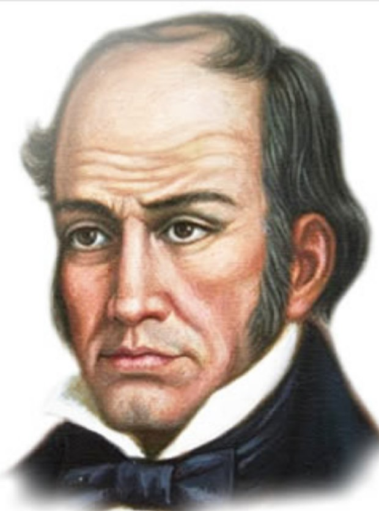
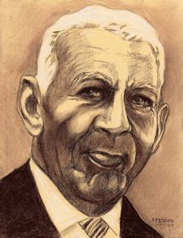

Inicio
Nuestra E.T.C.R. HERMÁGORAS CHÁVEZ, viene desarrollando un arduo trabajo pedagógico para afianzar los valores del nuevo ciudadano que la república necesita: fomentando valores, formando para la vida y el trabajo liberador y con espíritu participativo, protagónico y democrático.
Las Escuelas Técnicas Robinsonianas, están orientadas en el aprender haciendo como instrumento de planificación, ejecución y control del que hacer educativo, con el objeto de afianzar logros y minimizar las debilidades para consolidar la interrelación Escuela-Comunidad; el principio de “Aprender Haciendo y Enseñar Produciendo”, tiene como propósito central desarrollar un sistema de acción pedagógica que permita incorporar los diversos sectores de la sociedad: Urbano y Rural, en la función educativa, a objeto de impulsar: la seguridad alimentaria, fortalecer el autofinanciamiento, la autogestión y la participación comunitaria, a través de la educación y el trabajo como procesos fundamentales para alcanzar los fines de la nación.

La Educación y el Trabajo son concebidos como los instrumentos a través de los cuales se logran los fines pautados en la Carta Magna, en especial a lo referido al desarrollo del potencial creativo de cada ser humano y en pleno ejercicio de la personalidad, la valoración ética del trabajo y la participación activa, consciente y solidaria en los procesos de transformación social. Se fundamentan en el ideario bolivariano, en el pensamiento de Simón Rodríguez y en el Pensamiento de Luís Beltrán Prieto Figueroa.